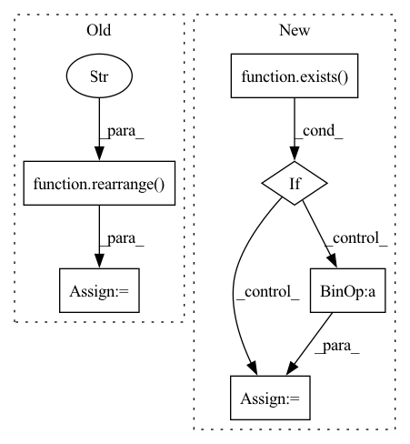

Pattern ID :33934
Before Change
attn = sim.softmax(dim = -1)
out = einsum("b h i j, b h d j -> b h i d", attn, v)
out = rearrange( out, "b h (x y) d -> b (h d) x y" , x = h, y = w)
return self.to_out(out)
class FiLM(nn.Module):
def __init__(After Change
x = self.norm(x)
if exists( self.time_cond) :
assert exists(time)
scale, shift = self.time_cond(time).chunk(2, dim = -1)
x = (x * (scale + 1)) + shift
if has_context:
context = self.norm_context(context)In pattern: SUPERPATTERN
Frequency: 4
Non-data size: 6
Instances Fragment ID: 97192634
Project Name: lucidrains/recurrent-interface-network-pytorch
Commit Name: 5cd08b2823cfe105785a525aea43a7396fea07e9
Time: 2022-12-24
Author: lucidrains@gmail.com
File Name: rin_pytorch/rin_pytorch.py
M Class Name: Attention
N Class Name: Attention
M Method Name: forward(4)
N Method Name: forward(3)
M Parent Class: nn.Module
N Parent Class: nn.Module
M File Name: rin_pytorch/rin_pytorch.py
N File Name: rin_pytorch/rin_pytorch.py
M Start Line: 149
M End Line: 161
N Start Line: 199
N End Line: 225
Before Change
context = torch.einsum("b h d n, b h e n -> b h d e", k, v)
out = torch.einsum("b h d e, b h d n -> b h e n", context, q)
out = rearrange( out, "b h c (x y) -> b (h c) x y" , h = self.heads, x = h, y = w)
return self.to_out(out)
class Attention(nn.Module):
def __init__(After Change
h = self.heads
x = self.norm(x)
if exists( self.time_cond) :
assert exists(time)
scale, shift = self.time_cond(time).chunk(2, dim = -1)
x = (x * (scale + 1)) + shift
qkv = self.to_qkv(x).chunk(3, dim = -1)
q, k, v = map(lambda t: rearrange(t, "b n (h d) -> b h n d", h = h), qkv) Fragment ID: 97192639
Project Name: lucidrains/recurrent-interface-network-pytorch
Commit Name: 5cd08b2823cfe105785a525aea43a7396fea07e9
Time: 2022-12-24
Author: lucidrains@gmail.com
File Name: rin_pytorch/rin_pytorch.py
M Class Name: LinearAttention
N Class Name: LinearAttention
M Method Name: forward(3)
N Method Name: forward(2)
M Parent Class: nn.Module
N Parent Class: nn.Module
M File Name: rin_pytorch/rin_pytorch.py
N File Name: rin_pytorch/rin_pytorch.py
M Start Line: 114
M End Line: 126
N Start Line: 136
N End Line: 157
Before Change
out = einsum("b h i j, b h j d -> b h i d", attn, v)
out = rearrange( out, "b h n d -> b n (h d)" )
return self.to_out(out)
def FeedForward(dim, mult = 4):
return nn.Sequential(After Change
q = q * self.scale
sim = einsum("b h i d, b h j d -> b h i j", q, k)
if exists( self.rel_pos_bias) :
sim = sim + self.rel_pos_bias(sim)
attn = sim.softmax(dim = -1, dtype = torch.float32)
Fragment ID: 97192636
Project Name: lucidrains/parti-pytorch
Commit Name: 2b18d49c36b33008c089f578c7fc4b00e36127bd
Time: 2022-06-24
Author: lucidrains@gmail.com
File Name: parti_pytorch/vit_vqgan.py
M Class Name: Attention
N Class Name: Attention
M Method Name: forward(2)
N Method Name: forward(2)
M Parent Class: nn.Module
N Parent Class: nn.Module
M File Name: parti_pytorch/vit_vqgan.py
N File Name: parti_pytorch/vit_vqgan.py
M Start Line: 253
M End Line: 255
N Start Line: 256
N End Line: 274
Before Change
sim = einsum("b i d, b j d -> b i j", q, k)
if self.causal:
sim = sim / rearrange( torch.arange(seq_len, device = device) + 1, "... -> ... 1" )
else:
sim = sim / seq_len
if exists(rel_pos_bias):After Change
attn = F.relu(sim) ** 2
attn = self.dropout(attn)
if exists( mask) :
mask = rearrange(mask, "b j -> b 1 j")
attn = attn.masked_fill(~mask , 0.)
if self.causal:
causal_mask = torch.ones((seq_len, seq_len), dtype = torch.bool, device = device).triu(1) Fragment ID: 97192644
Project Name: lucidrains/flash-pytorch
Commit Name: 6b0cc2e2316bf9c93b8b48916a11f774209d7bf1
Time: 2022-03-28
Author: lucidrains@gmail.com
File Name: flash_pytorch/flash_pytorch.py
M Class Name: GAU
N Class Name: GAU
M Method Name: forward(4)
N Method Name: forward(3)
M Parent Class: nn.Module
N Parent Class: nn.Module
M File Name: flash_pytorch/flash_pytorch.py
N File Name: flash_pytorch/flash_pytorch.py
M Start Line: 171
M End Line: 178
N Start Line: 162
N End Line: 184